Goal. Elicit preferences and motivate the need for a stable matching.
The deck. There is a write-on deck at /decks/matching-games/main.pdf: the preference lists waiting to be filled in, then four copies of the bipartite diagram so each round of proposals can be drawn on top of the last.
Every slide of the deck names the numbered section of the notes it is reading, and the last slide gathers them into one table, marks what is examinable and sets the reading for the next class. The rules of the activity sit on the slide that is up while the room plays, so a pair working alone is not going from memory.
Slides 2 and 3 introduce the four mathematicians and the four physicists in words: what each person is like, what they look for in a collaborator and what puts them off. Slide 4 then puts all eight on one slide as pictures, with a key along the top and the rules for the ranking. Show the two slides of descriptions briefly, so that three slides of reading do not eat the activity, then leave slide 4 up while groups work out a ranking for every person: one person's 'wants' and 'avoids' against each card on the other side is the comparison to make. The pictures guide the ranking rather than fix it, so steer the room towards the lists below. The same descriptions are on this preference sheet for anyone who wants a copy on paper.
Arrive at this:
Mathematicians
Physicists
Every one of these agrees with the pictures: score one for each trait a person wants that the other has, and take one off for each trait they avoid. Where two people score the same, the lists above break the tie, and those tie breaks are the places to steer the room. Curie's ranking is fixed by the cards, and Gauss and Newton rank each other first or second whatever the room does, so that pair is a good first win. These rankings have two stable matchings, which is what lets the last part of the deck show that the proposing side does better.
The following will obtain a stable matching:
import matching
import matching.games
mathematicians = [
matching.Player("Gauss"),
matching.Player("Noether"),
matching.Player("Turing"),
matching.Player("Euler"),
]
physicists = [
matching.Player("Einstein"),
matching.Player("Curie"),
matching.Player("Newton"),
matching.Player("Feynman"),
]
gauss, noether, turing, euler = mathematicians
einstein, curie, newton, feynman = physicists
gauss.set_prefs([curie, newton, einstein, feynman])
noether.set_prefs([feynman, einstein, curie, newton])
turing.set_prefs([einstein, feynman, newton, curie])
euler.set_prefs([feynman, einstein, curie, newton])
einstein.set_prefs([noether, turing, gauss, euler])
curie.set_prefs([noether, turing, gauss, euler])
newton.set_prefs([gauss, turing, euler, noether])
feynman.set_prefs([euler, noether, turing, gauss])
game = matching.games.StableMarriage(mathematicians, physicists)
game.solve()
Show students the notes, when you get to the algorithm work through the algorithm with the students.
Close on the last slide. It names what the class was reading and sets the reading for next time. Then run the quick quiz from the Matching Games topic page: five questions on the screen, answered by a show of hands. It takes five minutes and tells us both what landed.
Slide 5 writes the rankings as the maps \(f : S \to R^4\) and \(g : R \to S^4\), with the mathematicians as suitors and the physicists as reviewers, which is the form Question 1(a) asks for.
A blocking pair. Any pairing the class writes down will do, but if they need prompting: pair Gauss with Curie, Noether with Newton, Turing with Einstein and Euler with Feynman. Then Noether and Einstein block it, since Noether has her worst physicist and prefers Einstein, and Einstein has his second choice and prefers Noether.
Deferred acceptance, with the mathematicians proposing. It takes four rounds, which is why there are four diagrams:
The matching. Gauss with Curie, Noether with Einstein, Turing with Newton, Euler with Feynman. It is stable: there is no blocking pair. Gauss and Euler have their first choice. Noether would rather have Feynman, but Feynman prefers Euler. Turing would rather have Einstein or Feynman, but each prefers who they hold.
The physicists propose. Two rounds. Einstein and Curie both propose to Noether, Newton to Gauss and Feynman to Euler; Noether holds Einstein and rejects Curie. Curie then proposes to Turing, who holds her. The matching is Gauss with Newton, Noether with Einstein, Turing with Curie and Euler with Feynman, which is also stable.
Who does better. The proposers. Gauss gets Curie, his first choice, when the mathematicians propose, and Newton, his second, when the physicists do. Turing gets his third choice rather than his fourth. Newton and Curie gain in the opposite direction. Deferred acceptance returns the suitor-optimal stable matching, so every suitor gets the best partner they could have in any stable matching, and every reviewer the worst.
The activity above is written up as a marked exam question: Question 1 (the in-class activity) on the Matching Games page, with a full worked solution. Closing the loop here is the step that helps students who find exams hard: work through that question together, or set it as the immediate follow-up, so they see the game they just played turned into a full-mark answer.
Every page of the deck with its boxes completed, built from the same source as the blank deck we project. Click a page to see it full size.
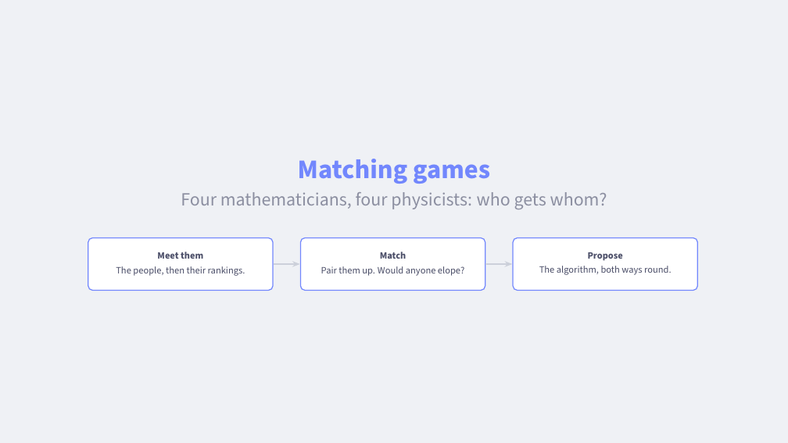
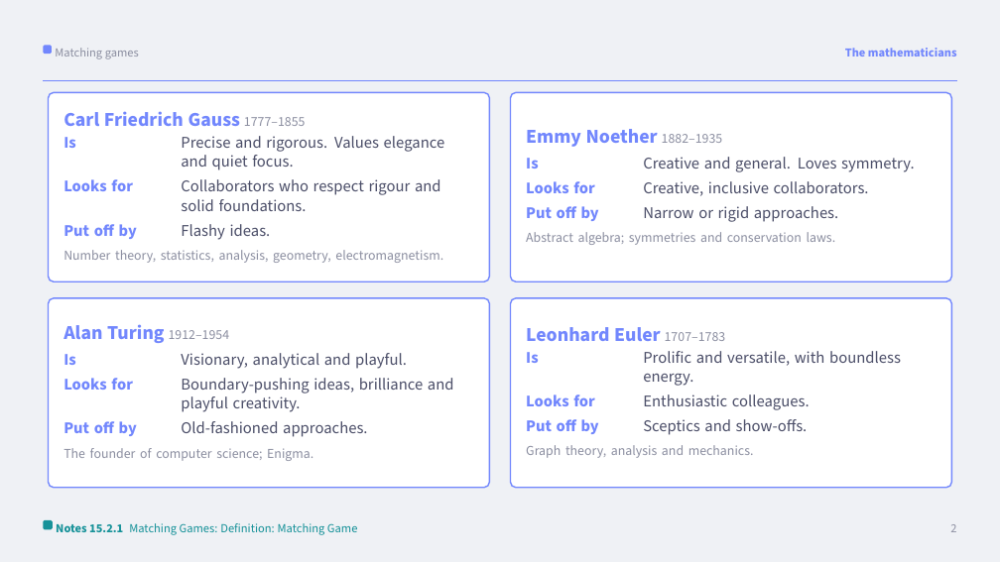
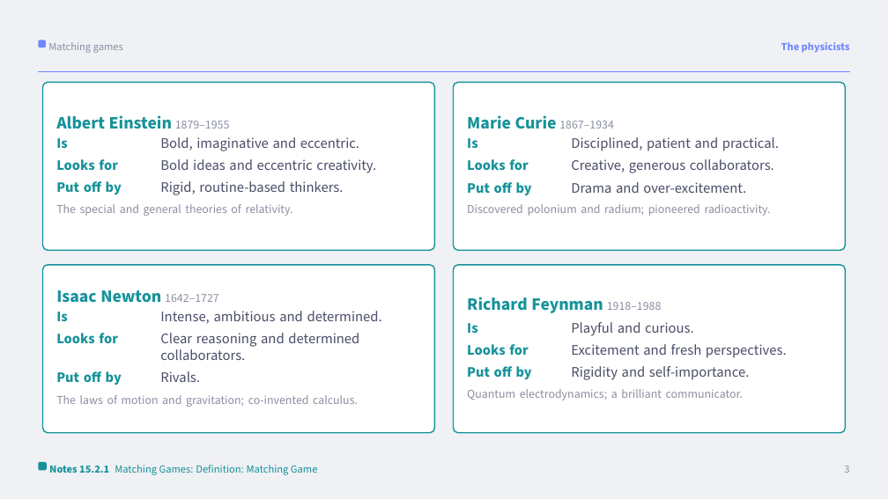
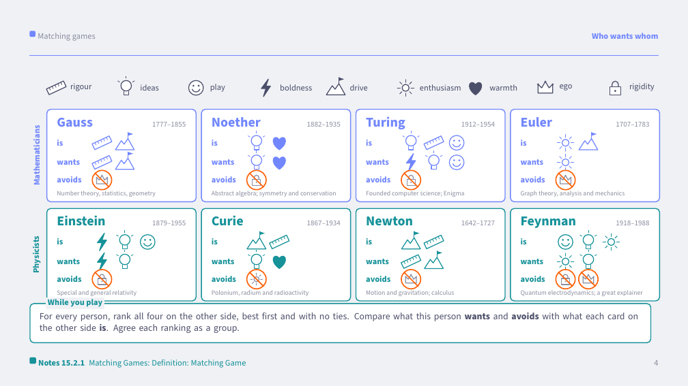
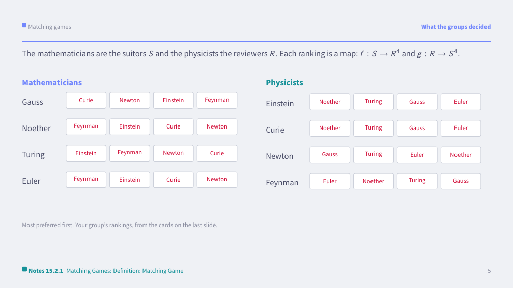
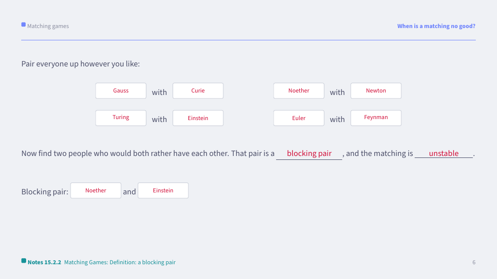
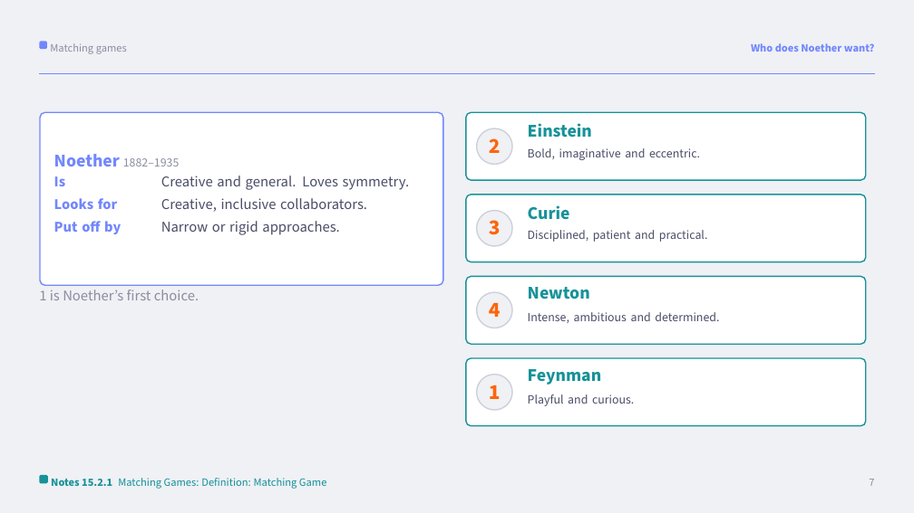
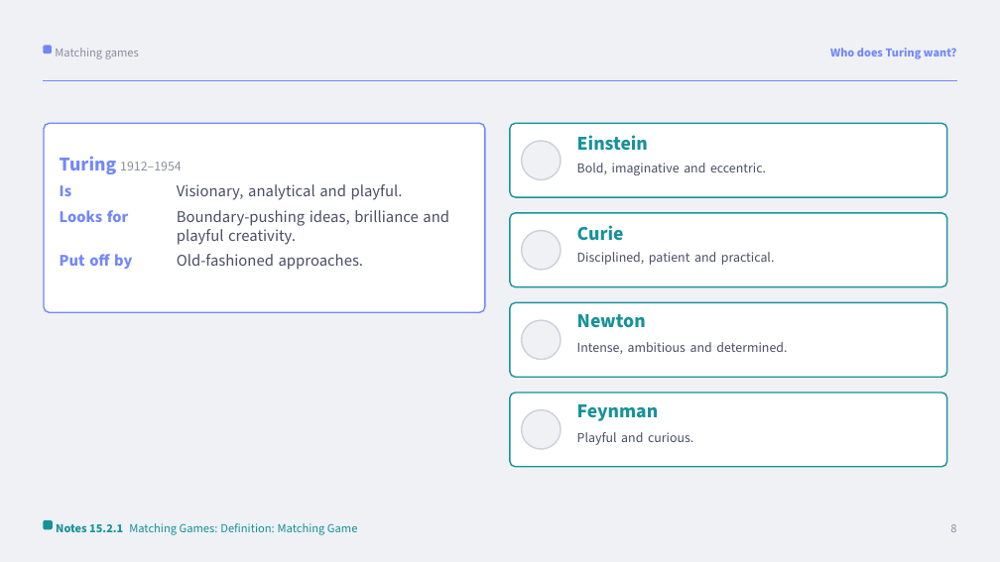
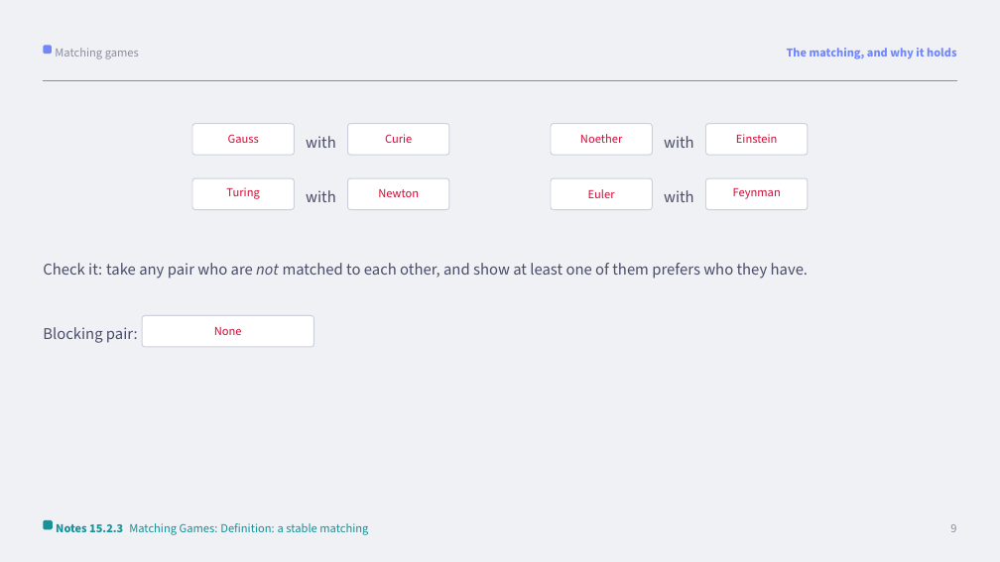
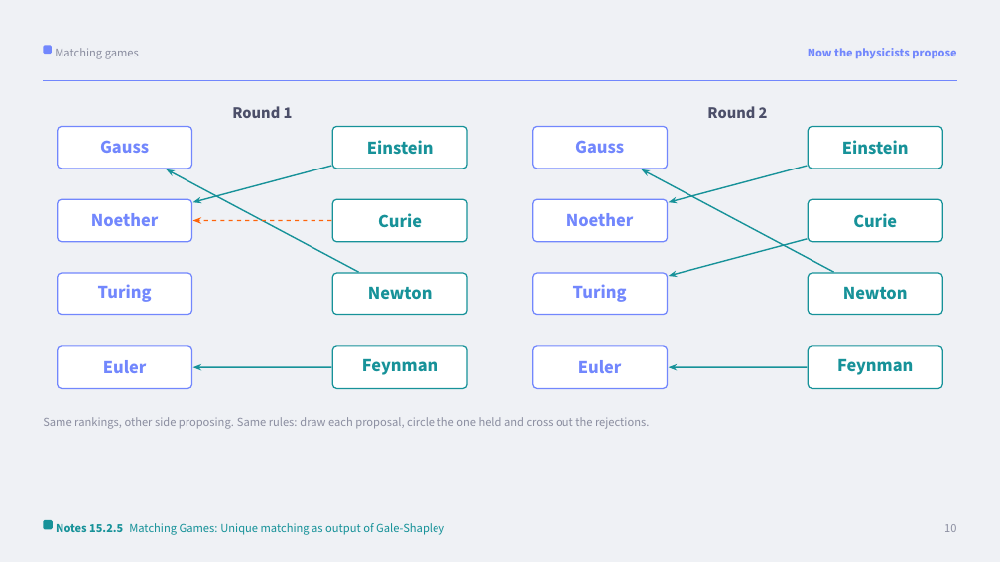
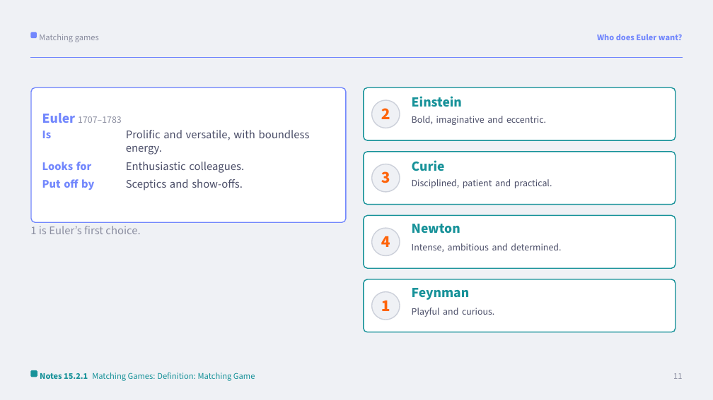
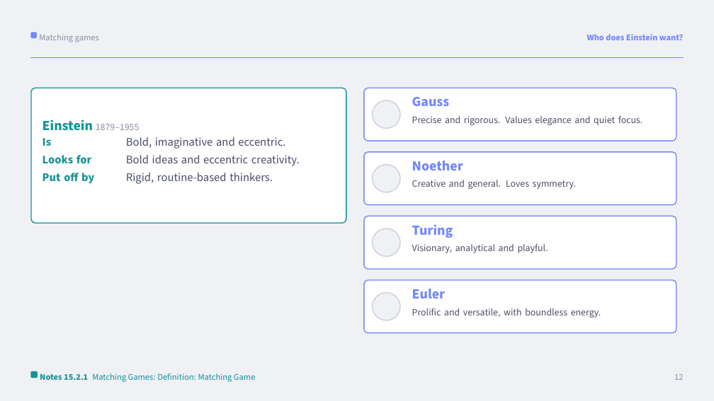
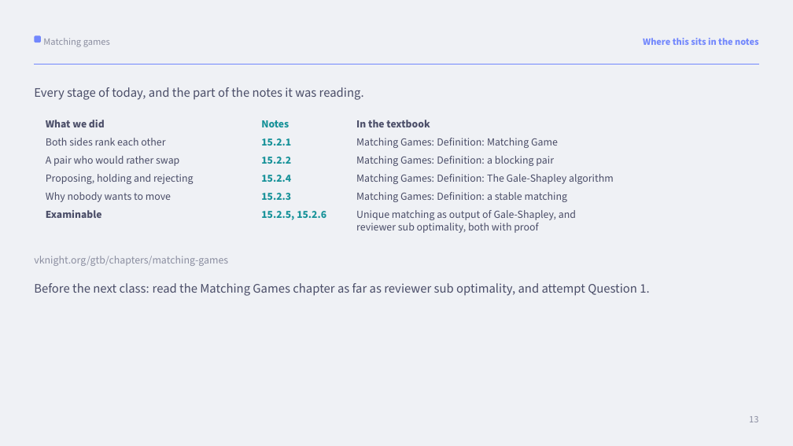
General email templates to send before and after this class. Fill in the bracketed placeholders before sending.
Hi all,
A reminder that our next Game Theory class covers Matching Games.
All of the course materials, including the relevant chapter, are available
at https://vknight.org/gt/. It is worth skimming the chapter beforehand.
See you in class,
Vince
Dear all,
Thanks for your work in today's class on Matching Games.
A recording is available here [RECORDING LINK] and on Learning Central.
All class resources are available at https://vknight.org/gt/.
Thanks,
Vince